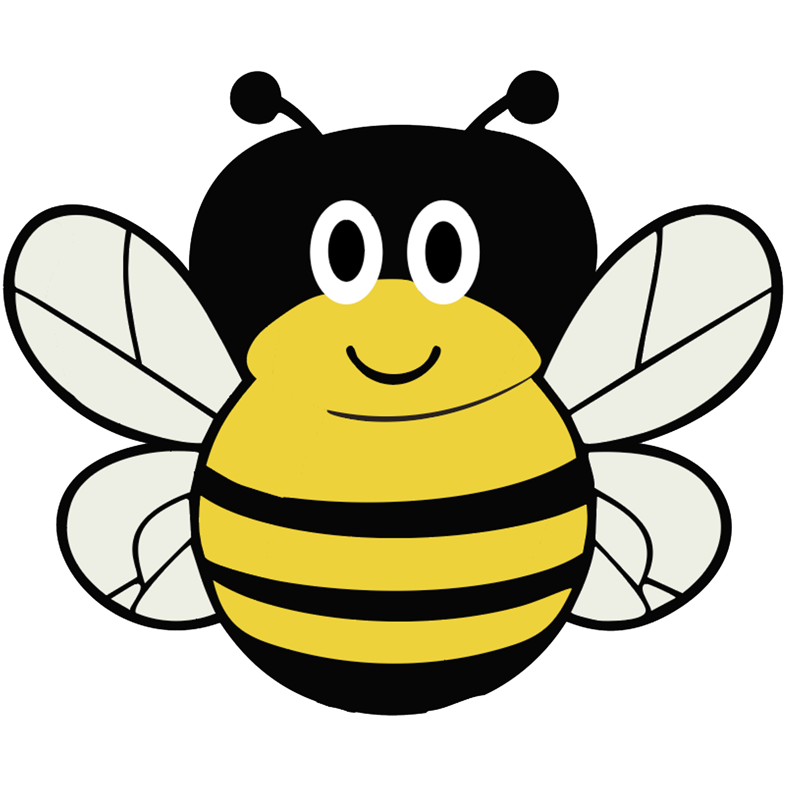

Welkom op
BeeYond
hier kan je meer leren over de Bijen en vooral hoe JIJ ze kan helpen. Leer meer over hoe jij de Bij kan helpen aan een nieuw huis of Wil je meer wil je meer weten over waarom Bijen nou belangerijk zijn. Neem gerust een kijkje
Meer over mij leren?
neem hier beneden
een kijkje
feitjes
Honing Bijen verzamelen nectar uit bloemen en slaan dit op in hun honingmaag. Terug bij de Bijenkorf kauwen en herkauwen de bijen hierop en word het omgezet in honing.

Mensen denken vaak dat als je gestoken word door een Bij dat de angel blijft zitten in de huid en de Bij dat niet overleefd. Dit klopt alleen bij de honing bij. Wilde bijen en hommels behouden hun angel.